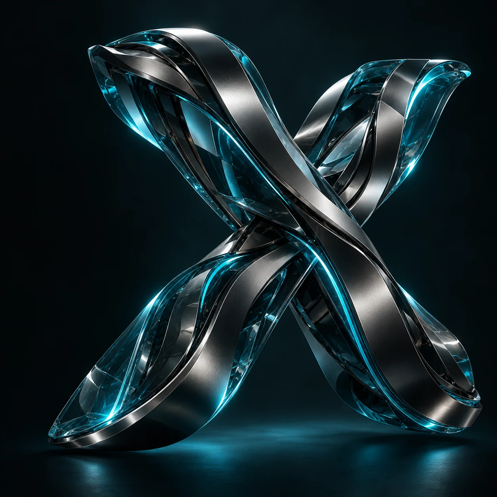

EXPERIMENTAL BY NATURE ［ X / 01 ］
JACK KAN / CREATIVE COMPUTING
Making code
feel alive._
A space for experiments in code, interaction,
and digital form. Built one sketch at a time.
CLASS PORTFOLIO — AN OPEN EXPLORATIONSCROLL TO DISCOVER
01 / THE ARCHIVE
Selected work.
Small experiments. New possibilities.
A collection of work from creative coding class.
09 EXPERIMENTS & COUNTINGView the original collection
02 / BEYOND THE CANVAS
The next experiment
is taking shape.
This archive is a work in progress. Future digital projects,
visual studies, and new ideas will find a home here.
03 / THE PERSON BEHIND THE PIXELS
Hi, I'm Jack.
Also known as CyanX.
I’m exploring what happens when code becomes a creative medium. This portfolio brings together my class assignments, playful tests, and experiments in p5.js.
From portraits made with simple shapes to moving particles and three-dimensional studies, each sketch is another way to learn by making.